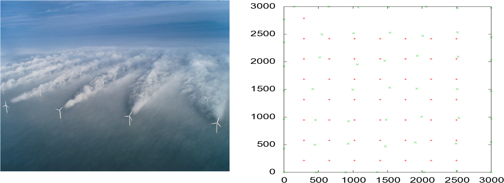
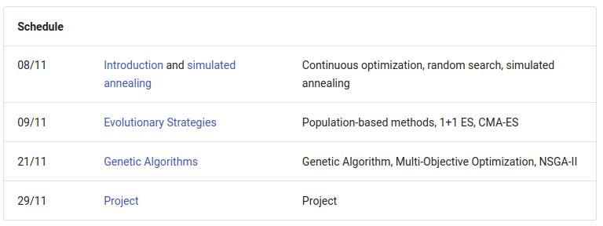

<!DOCTYPE html>
<html lang="en">

<head>
    <meta charset="utf-8" />
    <meta name="viewport" content="width=device-width, initial-scale=1.0, maximum-scale=1.0, user-scalable=no" />

    <title>Introduction to Stochastic Optimization</title>
    <link rel="shortcut icon" href="./favicon.ico" />
    <link rel="stylesheet" href="./dist/reveal.css" />
    <link rel="stylesheet" href="./static/css/reset.css" />
    <link rel="stylesheet" href="./static/css/evo.css" />
    <!-- <link rel="stylesheet" href="/_assets/evo" id="theme" /> -->
    <link rel="stylesheet" href="./css/highlight/zenburn.css" />

    <link rel="stylesheet" href="././_assets/static/css/evo.css" />
    <link rel="stylesheet" href="././_assets/static/css/reset.css" />

</head>

<body>
    <div class="reveal">
        <div class="slides"><section  data-markdown><script type="text/template">

## Introduction to Stochastic Optimization

Random Search, Simulated Annealing, Evolutionary Strategies, Genetic Algorithms

**ISAE-SUPAERO, SD**

Dennis WILSON

</script></section><section  data-markdown><script type="text/template">

### Stochastic Optimization

+ Search methods which use random variables to optimize on an objective function
+ No requirements for the objective function: not differentiable, convex, concave, simple. Any function works.
+ This is not problems which are stochastic (stochastic programming)
+ Other names: metaheuristics, black-box optimization, stochastic search
+ Examples: simulated annealing, particle swarm optimization, evolutionary strategies, genetic algorithms

</script></section><section  data-markdown><script type="text/template">
### Search: the Traveling Salesman example


Given a list of cities and the distances between each pair of cities, what is
the shortest possible route that visits each city once and returns to the
origin city?

Representation: list of cities in order

Objective function: total distance traveled

</script></section><section  data-markdown><script type="text/template">

### Search: Continuous Optimization


Representation: coordinates in N dimensional space

Objective function: problem-specific

</script></section><section  data-markdown><script type="text/template">

### Application: wind farm layout optimization



Representation: x,y coordinates of wind turbines

Objective function: Expected energy gain

Stochastic search methods are state-of-the-art because resolution methods based
on constraint satisfaction or planning are too costly given the physical
simulation of wind turbine wakes.

</script></section><section  data-markdown><script type="text/template">

### Application: Software development


Representation: Computer program (grammar or abstract syntax tree)

Objective function: Runtime, number of tests passed


</script></section><section  data-markdown><script type="text/template">

### Advantages

Pros
  + Flexibility in problem representation
  + Flexibility in objective function
  + Multitude of proven algorithms with (comparatively) few hyperparameters
  + Relatively easy to understand

</script></section><section  data-markdown><script type="text/template">

### Disadvantages

  + Computational cost
  + Search not fully informed by objective function
  + Expert knowledge for representation or objective function design

</script></section><section  data-markdown><script type="text/template">

### Class format

+ Course website at https://SupaeroDataScience.github.io/stochastic/
+ Notebooks available on course website or at https://github.com/SupaeroDataScience/stochastic/
+ Evaluation in two parts:
  + mini-quiz at the beginning of class
  + Project on final class

</script></section><section  data-markdown><script type="text/template">

### Class schedule



</script></section><section  data-markdown><script type="text/template">

### Exercise: recent applications

1. [Heuristic Strategies for Solving Complex Interacting Stockpile Blending Problem with Chance Constraints](https://raw.githubusercontent.com/SupaeroDataScience/stochastic/master/articles/xie_stockpile.pdf)
2. [Design of Specific Primer Sets for SARS-CoV-2 Variants Using Evolutionary Algorithms](https://raw.githubusercontent.com/SupaeroDataScience/stochastic/master/articles/rincon_cov2.pdf)
3. [Continuously Running Genetic Algorithm for Real-Time Networking Device Optimization](https://raw.githubusercontent.com/SupaeroDataScience/stochastic/master/articles/mandelbaum_networking.pdf)
4. [Evolutionary Minimization of Traffic Congestion](https://raw.githubusercontent.com/SupaeroDataScience/stochastic/master/articles/bother_traffic.pdf)

What is the application in the article? How is this application formulated into an evolutionary fitness?

What is the method used in the article? Describe it in simple terms.
</script></section></div>
    </div>
    <!-- <div id="footer-container" style="display:none;"> -->
    <div id="footer-container">
        <div id="footer">
            Stochastic Optimization - November 2020
            <br />
            <a href="https://supaerodatascience.github.io/stochastic/">https://supaerodatascience.github.io/stochastic/</a>
            <br />
            <a rel="license" href="http://creativecommons.org/licenses/by-sa/4.0/"></a>
        </div>
    </div>
    <script src="./dist/reveal.js"></script>

    <script src="./plugin/markdown/markdown.js"></script>
    <script src="./plugin/highlight/highlight.js"></script>
    <script src="./plugin/zoom/zoom.js"></script>
    <script src="./plugin/notes/notes.js"></script>
    <script src="./plugin/math/math.js"></script>
    <script>
        function extend() {
            var target = {};
            for (var i = 0; i < arguments.length; i++) {
                var source = arguments[i];
                for (var key in source) {
                    if (source.hasOwnProperty(key)) {
                        target[key] = source[key];
                    }
                }
            }
            return target;
        }

        // default options to init reveal.js
        var defaultOptions = {
            controls: true,
            progress: true,
            history: true,
            center: true,
            transition: 'default', // none/fade/slide/convex/concave/zoom
            plugins: [
                RevealMarkdown,
                RevealHighlight,
                RevealZoom,
                RevealNotes,
                RevealMath
            ]
        };

        // options from URL query string
        var queryOptions = Reveal().getQueryHash() || {};

        var options = extend(defaultOptions, {"transition":"fade","transitionSpeed":"default","controls":true,"slideNumber":true,"width":"100%","height":"100%"}, queryOptions);
    </script>


    <script>
        Reveal.initialize(options);
        var footer = $('#footer-container').html();
        $('div.reveal').append(footer);
        var logo = $('#logo-container').html();
        $('div.reveal').append(logo);
    </script>
</body>

</html>
